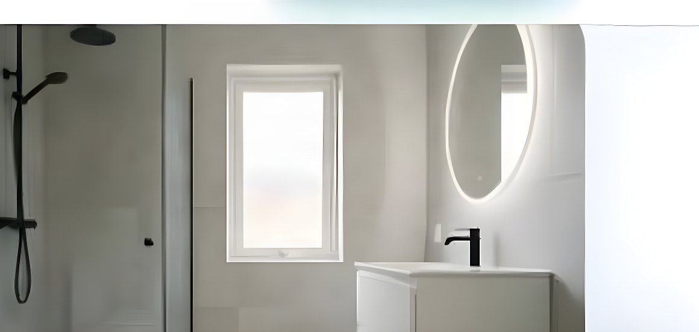

Tjänst · Uddevalla & Trestad
Plattor är enkla. Tätskiktet är det som gäller.
Kakel och klinker i hall, kök och badrum — med tätskikt som är gjort rätt. Det är där badrum faktiskt håller eller inte.

Plattsättning — så gör vi
Ett badrum kan se färdigt ut och ändå vara fel. Tätskiktet ligger bakom plattorna, osynligt för alla utom den som gjort jobbet. Är det slarvigt gjort märks det ett par år senare, som fukt i väggen eller en fog som aldrig torkar.
Vi gör tätskikt enligt gällande regler och dokumenterar med bilder, så att du har papperen om något händer. Sedan sätter vi plattorna. Fall mot golvbrunn kontrolleras löpande, inte på slutet — lutning går inte att rätta efteråt.
Fogning är sista intrycket. Vi går igenom färg och bredd med dig innan, och fogar och silikonar hörn och anslutningar med rätt produkt.
Fast pris efter besiktning, där tätskikt, plattor, fog och silikon ingår. ROT-avdrag drar vi av på fakturan där det gäller.
Det här ingår
- Tätskikt enligt reglerna, med bilddokumentation
- Fall mot golvbrunn kontrolleras under arbetet
- Kakel och klinker i hall, kök och badrum
- Fogning i vald färg och bredd
- Silikon i hörn och vid anslutningar
- Kapning och montering kring rör och blandare
- Städning och avtorkning efteråt
Arbetsgång
Från första samtal till färdigt resultat
- 1
Genomgång
Vi tittar på rummet, underlaget och vad som behöver flyttas eller rivas.
- 2
Tätskikt och plattor
Vi utför, dokumenterar tätskiktet och kontrollerar lutningen löpande.
- 3
Fogning och slutkontroll
Fogat, silikonat och genomgånget tillsammans innan vi lämnar.
Frågor om plattsättning
Vanliga frågor
Tar ni bort gamla plattor?
Ja, när det behövs. Sitter de fast och ytan är jämn kan vi ibland lägga ovanpå, men vi säger till om det är fel väg att gå.
Vem ansvarar för tätskiktet?
Vi gör det och lämnar bilder på utförandet. Det är en del av jobbet, inte ett tillval.
Kan ni klinkers i hall och kök?
Ja. I hall och kök är klinker ofta rätt val — slitstarkt och lätt att hålla rent.
Får jag se något liknande jobb?
Vi visar bilder på badrum vi gjort och du får prata med tidigare kunder om du vill.
Kostnadsfri offert på plattsättning
Skicka några rader om ytan, eller ring — vi svarar samma dag.